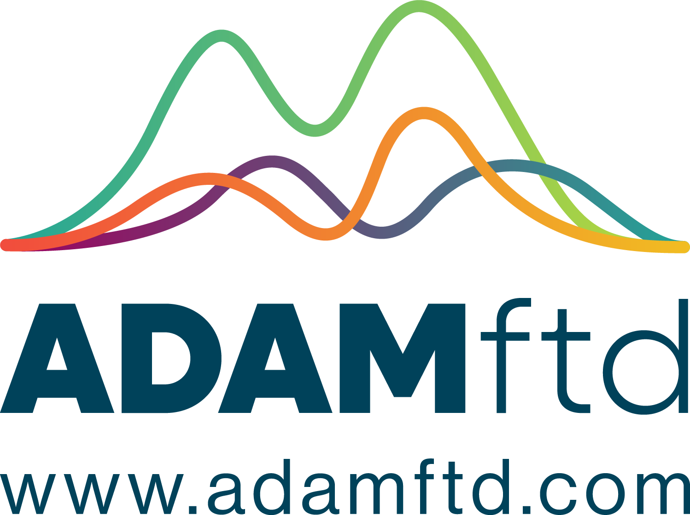

Intelligence layers
5
Trade · Tariffs · Sanctions · Tenders · Vessels

Start freeEighty‑seven capabilities in production. Seven billion verified records. Every answer cited. Built grounded from day one, not retrofitted onto a database with a chatbot bolted on later.
Five intelligence layers wired through a single reasoning engine. Thirteen tools. Eighty‑seven capabilities. One natural‑language interface. Every answer comes back with citations, a visible reasoning trail, and a confidence band.
The MVP is live. Five layers, thirteen tools, every answer grounded and cited. What is missing is not the product. It is the budget to tell the world.
Every other tool in the market covers one or two of these. ADAMftd is the first to wire all five through a single grounded reasoning layer.
Bilateral flows, top markets, exporters and importers. Bills of lading, customs records, HS‑6 corridors.
Classification, duty rates, landed cost calculator across major trading jurisdictions.
Real‑time screening across all major lists: entity, vessel, country. OFAC, EU, UN, UK and national.
Live government procurement opportunities by sector, country, value, deadline.
Live mapping of global maritime shipping. Movement, congestion, sanctioned‑vessel flags.
The disclaimer shown on every session: "ADAMftd verifies against multiple official sources, but occasionally these sources may conflict — the math is shown." This is what makes the system grounded rather than generative.
Customs records, sanctions lists, AIS feeds, tender registries — pulled from primary sources, not aggregators.
Each fact checked against at least two independent feeds. Disagreements flagged before reasoning begins.
Frontier models run the query in parallel. Numerical answers go through an independent math cross‑check.
When sources conflict, proprietary models plus Monte‑Carlo simulation calculate the most likely answer.
Final answer returned with citations, confidence band, and a visible reasoning trail.
The world's only HS‑6 oil‑shock engine. Four geopolitical scenarios, modelled across the goods most exposed to the Strait — energy, petrochemicals, fertilizers, refined products, downstream manufacturing. No equivalent exists at any price.
The Hormuz architecture was a flagship use‑case for the platform, not a separate build. The data, the grounded AI, and the institutional context already lived inside the workspace; the simulator is what happens when you ask all five intelligence layers a single question at once.
A petrochemicals importer in Vietnam, a fertilizer trader in Brazil, and a treasury team at an Italian ECA all see the same scenario maths — sized to their corridor, their HS code, their cargo.
The deepest natural‑language trade readiness suite at any price. 10 credits per function · roughly $5 at the reference rate. The Pro tier includes 1,200 credits a month.
Retail snapshot · Market sizing · Top buyer profile · Competitor positioning · Sentiment analysis · Seasonal intelligence · Local production.
Market entry barriers · Packaging & labelling · Quality & certifications · Distribution channels.
Two flagships — Market Analysis and the Hormuz Simulator. The remaining eleven cover the working surface of an international trader's day.
Bilateral flows, top markets, exporters, importers.
Classification, duty rates, landed cost.
Entity, vessel, country, in real time.
20,000+ live across 84 countries.
7,300+ vessels, 8,000+ ports. Live.
Who ships what, to where, in what volume.
Top products, partners, tariff regimes.
Eleven functions, two analysis bands.
Four scenarios · every HS‑6 code globally.
$500 single · $1,000 global · 48h SLA.
Profiles, trade activity, risk flags.
8 modules. Deals, contacts, tasks, docs.
Bulk enrichment, resumable. Search history.
Run a real corridor, a real counterparty, a real scenario. If the answer doesn't pay for itself in the first session, walk away.